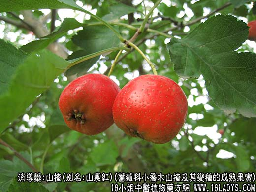
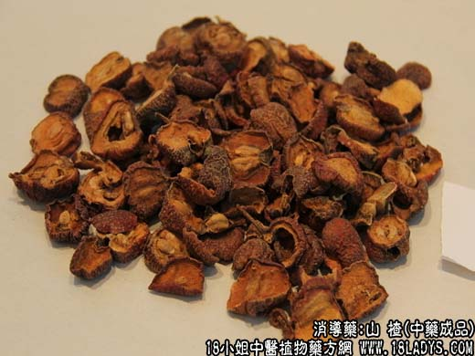
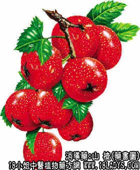

本品为常用中药。始载《唐本草》，原名赤爪子。《本草纲目》名山樝，今通作山楂。商品分为北山楂、南山楂两种。
1、北山楂
别名：山里红、酸楂、红果（果名）、山楂片、红果片、酸楂片。
来源：为蔷薇科植物落叶小乔木山楂及其变种山里红的成熟果实。栽培。
采收加工：10月份采收成熟果实，趁鲜切成楂片晒干即成。
产地：主产于山东省益都（古名青州府）、临朐、沂水、安邱，以及华北地区，此外河南新乡地区也有生产。
性状鉴别：新鲜果实呈球形，直径1.5~2.5厘米。表面鲜红色或紫红色，密被灰白色细斑点。顶端有宿存花萼，基部有凹入的果柄痕或残留国柄。干燥后的楂片薄厚不一，有2~3刀片或5刀片之分，片多卷边或皱缩不平。果肉淡粉色或淡棕色，内含淡黄色种子5~6粒，略呈枯瓣形，极坚硬。2刀片种子仍集结于果肉中心，3~5刀片则散落于果肉之外。果肉气微清香，味酸而微甜。以片大二薄，肉厚粉白色，皮鲜红色，种子不超过20%者为佳。按产地划分以山东益都地区产品最好，华北地区产品稍差，河南新乡地区2~3刀片次之。
2、南山楂
别名：棠球子。
来源：为蔷薇科植物落叶灌木或小乔木野山楂—湖北山楂、华中山楂等的成熟果实。多为野生。
采收加工：8月上旬采收成熟果实，直接晒干或沸水中浸烫片刻，捞出后压扁后晒干（山楂饼）。
产地：主产于华东、中南、西南等地区。
性状鉴别：本品直接晒干者呈球形，直径0.8~1.5厘米。表面棕黑色或褐色，稍显皱缩，亦有宿存花萼及果柄痕。果肉薄显干瘪。质坚结，不易破碎。内种子与北山楂相似。山楂饼扁圆饼状，褐色，常有破裂，气微，味酸涩。以粒大火饼圆厚，色红褐者为佳。习惯认为楂饼品质稍好。
主要成分：含有苹果酸、枸橼酸、维生素C、核黄素、胡萝卜素、蛋白质、脂肪等。野山楂又含山楂酸、鞣质、皂甙等。
药理作用：消导食积，化瘀散滞。其原理为：
1、助消化。山楂酸有促进消化作用。
2、抗菌。体外试验对志贺氏痢疾杆菌有较强的抗菌作用。
3、扩张血管和降压。通过扩张血管而起较持久的降压作用。前人认为山楂能行瘀散滞，可能与其扩张血管的作用有关。
炮制：生用、炒用或炒焦用。
性味：酸、甘、温。
归经：入肝、脾、胃经。
功能：消积、行瘀、化滞。
主治：食积、肉积，脘腹满闷，脾脏肿大，经闭瘀阻，产后儿枕痛，疝痛，痢疾等症。
临床应用：
1、治食积（消化不良）对消除油腻、肉积（由食肉和脂肪过多而引起的消化不良）尤为合用，也可用胃酸缺乏症；对小儿伤乳之消化不良、食欲缺乏，效果也好。常配淮山、布楂叶、青皮、神曲、竹茹等，或用包河丸。
2、治腹泻，对痢疾或慢性结肠炎都有疗效，取山楂有抗痢疾杆菌和收敛止泻作用。常配煨肉蔻、炒扁豆、煨木香等。
3、治瘀痛，取其有化瘀（扩张血管而解除郁血状）作用，较常用于妇女月经痛、产后下腹瘀痛等。常配当归、川芎、延胡索、益母草等。
4、治出血，用山楂炭。对胃出血，配白芍、陈棕炭、当归炭、党参、金樱子等；对血痢，配禹余粮、川连、银花炭、煨诃子等。
附：胃酸过多有吞酸、吐酸者慎用山楂；胃溃疡患者也应慎用。
用量：6~12g。
处方举例：保和丹（朱丹溪）（成药）：含山楂、神曲、半夏、茯苓、陈皮、连翘、莱菔子等，每服9~12g，温开水或麦芽糖送下。
消食方：炒山楂9g，神曲9g，布渣叶12g，淮山9g，金银花9g，葛根6g，青皮6g，水煎服。大便秘结者加大黄、枳壳，发热感冒加佩兰、连翘。
注：据报导山楂有强心、扩张血管及持久降低血压作用，山楂流浸膏，对于心脏衰弱，冠状动脉硬化性心脏病、心功能不全和高血压有一定效果。山楂花、叶浸剂治疗高血压，有良好效果。